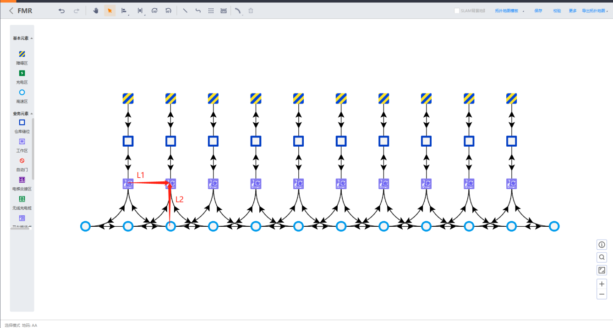
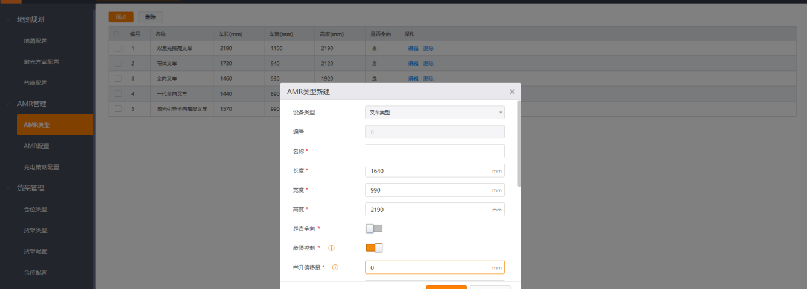
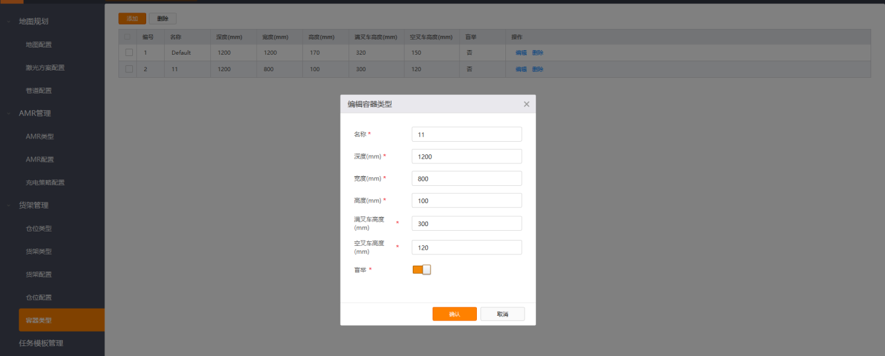
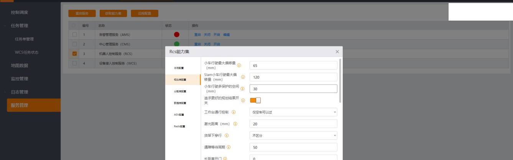

叉取机器人地图规划与业务部署
叉取车型的返工大多埋在地图里：等待点间距 10cm 与 50cm 两套标准混用、弧线画反，常常到带货叉取才暴露。储位坐标反算、加密文件参数换算与两处偏移量对齐 120mm 的规则，都附了判断标准。
实施部署目录
供叉取项目实施工程师在地图规划与 AMR 建档阶段对照使用，源自厂内操作手册 V1.0，车体参数与偏移量最终仍要以实车铭牌和现场标定为准。
部署总览：六章串起来的实施链路
叉取机器人落地按固定顺序推进，前一环没打牢，后面必然返工：
- 地图规划：新建拓扑地图，做出储位（工作台）、叉车等待点、障碍区、高速区、充电区，并算准坐标、画对弧线。
- AMR 管理：从主控取加密文件，读出车体参数，在“AMR 类型”里建档。
- 货架管理：按托盘是落地还是上架，配置货架类型、容器类型，再做绑定。
- 能力集配置：打开叉车偏移误差，统一 SLAM 行驶最大偏移量。
- 点到点业务：任务模板 + 生成 AMR 调度单。
- 巷道业务：建巷道、校验完整性、配三段式任务模板。
前四步全部属于“静态配置”，做完应当能在地图上手工发一单空车往返；如果直接跳到巷道业务，问题会被巷道逻辑放大，很难判断是地图问题还是任务模板问题。
地图配置：拓扑地图与必备点类型
入口是系统模型 > 地图规划 > 地图配置，新建拓扑地图，填写地图名称、地码类型，默认打开“是否刷地图”。
叉取机器人的拓扑地图必须包含以下几类点，缺一类就有一类业务跑不通：
| 点类型 | 作用 | 漏配后果 |
|---|---|---|
| 基础点属性 | 路网骨架 | 无法规划路径 |
| 障碍区 | 禁止通行区域 | 车会规划穿墙路线 |
| 储位（工作台） | 取放货点 | 任务无终点 |
| 叉车等待点 | 叉取前的姿态调整点 | 无法对位叉取 |
| 高速区 | 允许提速路段 | 效率下降 |
| 充电区 | 自动充电位 | 低电量无法回充 |
储位与等待点是成对出现的：等待点负责“把车摆正”，储位负责“取放”，两者间距直接决定叉取成功率。
坐标计算：储位点与叉车等待点
储位点坐标的算法是“以车实测、反算点位”，步骤如下：
- 把容器放到指定位置。
- 用遥控软件把门架前移，再把机器人遥控到货物传感器与容器完全触发。
- 记录机器人监控上报的坐标，填入点位坐标计算工具，得出储位坐标。
计算时用到的“货架与叉车平行边长”，指的是容器的深或长，不同平台版本命名不一样，填错会整体偏移一个容器尺寸。
叉车等待点坐标关注的是间距：储位确定后，在储位上摆好托盘，机器人叉尖距托盘大于 10cm 时上报的坐标即为等待点；开启栈板识别时该间距要大于 50cm。
10cm / 50cm 是两套标准，取决于是否开栈板识别。现场若先按 10cm 调好再开识别，会频繁识别失败，必须重新拉间距。
弧线设计：方向对了才叉得准
一个叉车等待点尽量保证两条出入路径；弧线两端点对称，呈 1/4 圆，且 L1 = L2。

两个硬性规则：
- 方向必须朝向点位方向。机器人从弧线行驶到等待点时，车头方向要正对等待点朝向，因此弧线起终点的方向设置不能反。手册给出的是“1 为错误路线、2 为正确路线”的对照。
- 半径决定转向方式。弧线半径小于 0.5m 推荐原地旋转；大于 0.5m 时按车型设置对应弧线速度。
弧线画错不会在空车测试时暴露，往往到带货叉取才表现为“总是差一点对不上”。改弧线意味着整片路网重画，务必在地图评审阶段就把方向与半径确认到位。
点属性配置：旋转车型与旋转容器类型
储位点和叉车等待点的属性规则一致：
- 点属性中的“旋转车型”不勾选当前车类型；
- “旋转容器类型”不勾选当前容器类型；
- 点位方向按实际取放货时的车头朝向设置。
叉车等待点还必须关联对应的储位或工作台坐标，否则调度知道要等却不知道等完去哪取货。巷道场景中整条巷道的点位方向统一设为 -90 度，且整条巷道点的“旋转车型”都不勾选当前车型。
AMR 类型建档：加密文件获取
进入 AMR 管理 > AMR 类型 添加叉取机器人类型，参数不能随手填，必须参照加密文件里的实测值。取文件的方式按主控版本区分：
| 主控版本 | 操作 | 产物 / 说明 |
|---|---|---|
| 2.8.x | 终端连接工具登入，执行 castor_cli -R 246 | mnt 下生成 secinfo.bin，下载后参照加密文件打开方式处理 |
| 2.8.x（读参数） | 执行 castor_cli -T 1 -R 72 -T 0 | 直接输出相关参数信息 |
| 4.x | 执行 castor_export_sec_bin | mnt 下生成 sec.bin |
| 4.x（读参数） | 执行 castor_get_sec_info | 获取相关机器人参数 |
2.8.x 取到的是 secinfo.bin，需要重命名为 sec.bin 才能被加密工具识别；直接打开原文件名会读不出来。
加密文件打开与参数填写
步骤：
- 运行
imx6_encrypto.exe，机器人产品选择叉车-IMX6 平台。 - 右下角选择登入，输入默认账号密码后登入。
- 右上角选择解锁。
- 设置保存路径（
sen.bin的存放目录，建议在 D 盘新建TftpdWin文件夹）。 - 点击读取
sec.bin，获取相关参数。
参数换算口径：
| 参数 | 计算方式 | 注意 |
|---|---|---|
| 举升偏移量 | 举升后货叉长度 − 叉尖距离 | 仅 F3 车型需要计算，其它车型填 0 |
| 运动中心到车头距离 | 车长 − 叉尖距离 | F1 全向车型不使用 |
| 运动中心到门架距离 | 货叉长度 − 叉尖距离 | F1 不使用；前移叉车与平衡重可能出现负值，平台不允许负值需提定制 |
| 运动中心到刷块 | 卷尺实测 | 不要用计算值 |
| 叉齿面最低高度 | 最低举升高度 | 来自加密文件 |
| 最大可抬叉高速 | 最高举升高度 | — |
| 是否全向 | F1 打开，其他车型关闭 | 与车型强绑定 |

另外要打开“放货后退到出到等待”，否则放完货车会停在储位上，堵住下一个任务。
三类车型的参数差异（基线值）
| 参数 | 堆高叉取 | 搬运叉取 | 全向车型 |
|---|---|---|---|
| 是否全向 | 否 | 否 | 是（F1） |
| 举升偏移量 | 0（非 F3） | F3 必填，= 举升后货叉长度 − 叉尖距离 | — |
| 预抬放叉齿高度 | 300 | 75（安全高度 75） | — |
| 叉齿面最低高度 | 100（加密值） | 75（加密值） | — |
| 空叉行走叉面高度 | 100 | 75 | — |
| 载货行走叉面高度 | 300（须高于轮廓激光安装高度） | 200 | — |
| 刷块中心到运动中心 | 暂不用，可填 948 | 1530 | — |
| 运动中心到门架 | 748 | 630 | 需联系产品经理获取 |
| 运动中心到车头 | 车长 − 叉尖距离 | 1125 | 需联系产品经理获取 |
载货行走叉面高度必须大于轮廓激光安装高度，否则带货行走会被判内部遇障，表现为“货一提起来就走不动”。上表数值是基线车型参考值，不同车体以铭牌与加密文件为准。
货架与容器配置：两个场景别弄混
货架配置分两个场景，选错类型是叉取项目最常见的返工原因：
| 场景 | 货架形式 | 要点 |
|---|---|---|
| 托盘（容器）放置地面 | 无框体货架 | 以 1200×800mm 托盘为例：先配仓位类型并加仓位，再按尺寸配货架参数，最后在货架类型管理里补齐参数 |
| 托盘（容器）放置货架 | 固定高位货架 | 按实际长宽配；第一层容器放地面时腿高配 0 |
巷道的货架一定要配成无框体货架，否则巷道缓存区的取放逻辑不成立。

容器配置的口径：叉齿与容器的平行边为容器“深”（长）。所以 1200×800 的托盘应填深 800、宽 1200，高度按实际；空叉高度设为机器人空叉行走高度，满叉高度设为满叉行走高度（必须大于激光安装高度）。
容器盲举：若业务里有 getpod / returnpod，上层无法下发容器编号，此时必须打开盲举。
绑定规则：任务起点与终点都要绑定货架（运营管理 > 控制调度 > 设置货架与储位绑定，方向要设对）；容器只需在起点仓位绑定，终点仓位不用绑。
能力集配置：偏移量与 SLAM 精度
入口：运营管理 > 服务管理，勾选 RCS 服务后点击“获取能力集”再改配置。
- 本地配置：叉车偏移误差必须打开。任务下发时，RCS 会按车型配置的参数值计算并下发任务目标点。
- 精度配置（叉车 SLAM 导航）：规划库配置中的“Slam 小车行驶最大偏移量”与 AGV 配置中的“SLAM 空车（载货）行走最大偏移距离”必须一致，建议 120mm。
- 精度配置（叉车二维码导航）：规划库的小车行驶最大偏移量要与 AGV 的空车（载货）行走最大偏差保持一致。

规划库与 AGV 配置的偏移量不一致时，会出现“规划通过但下发被拒”或车到位后反复微调的情况。改一处必须同步改另一处，并记录在交付文档里。
点到点业务：任务模板与下发
任务模板（系统模型 > 任务模板管理）：
- AMR 类型选择正确的叉取机器人类型。
- 货架参数选择本次业务要用的参数。
- 打开“有叉车等待点”；刷地图时打开“是否记货架”。
任务下发（运营管理 > 控制调度 > 生成 AMR 调度单）：
- 任务单编号、站点集合、容器类型为必填项。
- 按“仓位到仓位”发任务：站点集合添加时选择仓位编号，内容输入仓位编号。
- 依次添加起点仓位与终点仓位。
- 点击“生成任务单”，到运营管理 > 任务管理 > 任务单管理核对生成结果。
巷道业务：先进后出与先进先出
两种模式的差别只在“从哪头进出”：
| 模式 | 进 | 出 |
|---|---|---|
| 先进后出 | 从巷道头进货，放到离巷道尾最近的巷道缓存区 | 从靠近巷道头的缓存区，从巷道头出 |
| 先进先出 | 从巷道头进货，放到离巷道尾最近的缓存区 | 从靠近巷道尾的缓存区，从巷道尾出 |
地图构建：巷道头、巷道尾相当于叉车等待点，两者到缓存区的距离按“等待点到正常储位”的距离设置；点位方向设为 -90 度，整条巷道的“旋转车型”不勾选当前车型。
巷道配置（系统模型 > 地图规划 > 地图配置 > 巷道配置）：填写巷道编号、巷道名称，进出方式选“先进后出/先进先出”，巷道头编号选择对应巷道头的地图数据，容器类型选实际使用类型。
巷道校验：添加后必须校验完整性；不完整时点击校验会弹出提示，按提示排查。缓存区要按实际绑定无框体货架后再校验一次。
任务模板以“巷道到工作台”为例是三段式：第一步移动目标点获取方式为站点集合；第二步为巷道；第三步为站点集合。“工作台到巷道”则前两步为站点集合、第三步为巷道。
工作台到巷道的任务必须发容器编号，否则货到巷道头后，后续进巷道的任务无法继续执行；替代方案是把容器类型设置为盲举。
上线前核对
- 拓扑地图包含基础点、障碍区、储位、叉车等待点、高速区、充电区六类要素
- 储位坐标由点位计算工具反算得出，容器平行边参数与平台版本命名对应
- 叉车等待点与储位间距符合 10cm / 50cm（开栈板识别）标准
- 每个等待点至少两条出入弧线，L1=L2 且车头方向朝向点位方向
- 弧线半径 <0.5m 用原地旋转，>0.5m 按车型设弧线速度
- 储位点与等待点的“旋转车型”“旋转容器类型”均未勾选当前车型/容器类型
- AMR 类型参数与加密文件一致，secinfo.bin 已重命名为 sec.bin
- 载货行走叉面高度大于轮廓激光安装高度，已开启“放货后退到出到等待”
- 货架类型与场景匹配（落地=无框体，上架=固定高位，巷道=无框体）
- 容器深/宽方向正确，空叉与满叉高度与实车一致，需要盲举的业务已开启盲举
- 能力集“叉车偏移误差”已打开，SLAM 偏移量两处配置一致（建议 120mm）
- 巷道已校验通过，工作台到巷道任务下发时携带容器编号或启用盲举